마법진으로 워프할 수 있게 만들어봤어요 ㅋ
워프게이트나 포탈 그런 같은 기능을 가진 플러그인 보신 분도 있을거에여
그거 따라서 한번 만들어본거에여 직접 만들었지만 새로운건 아님!!
이 플러그인을 사용하려면
입구(출발지점)와 출구(도착지점) 두가지 종류의 마법진을 사용해야해여
둘 다 x(5),
y(3), z(5) 만큼의 빈 공간이 필요하구여
1. 도착지점
우선 1, 2, 3층을 구성해야해여
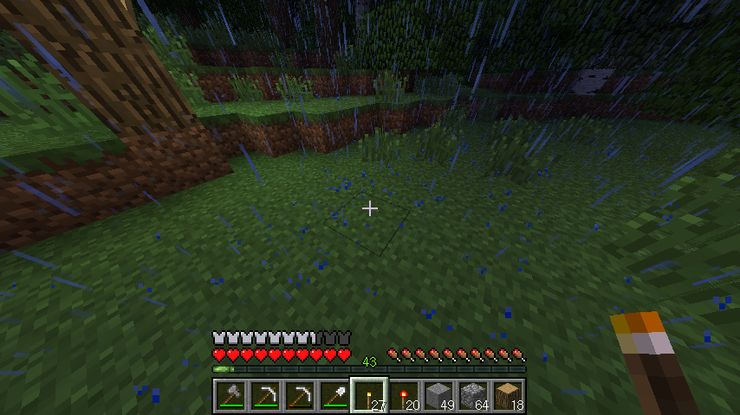
이렇게 5x3x5
의 빈공간을 마련해주시구
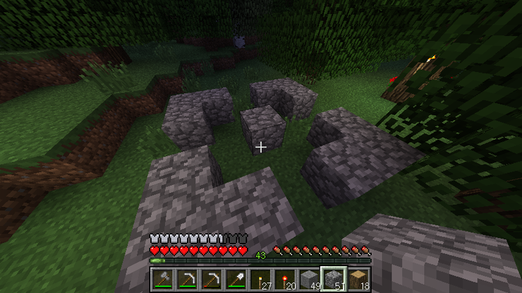
우선 조약돌로 이렇게 깔아주세여!
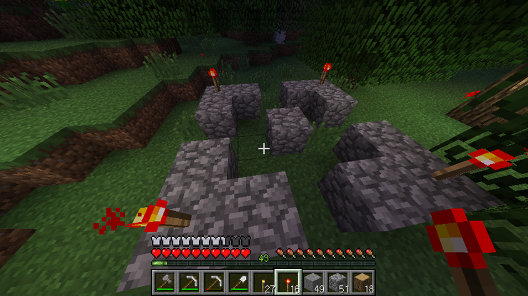
그리구 레드스톤 횃불로 각 모서리에 한개씩 총 네개
설치해주시구여
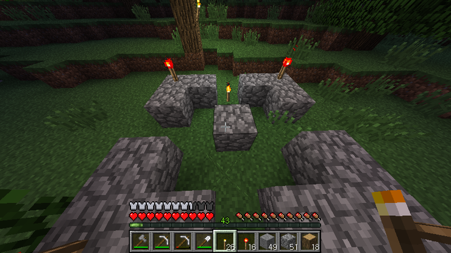
횃불의 방향은 동서남북은 관계 없고
횃불의 위치로 상대적인 동서남북 기준을 잡아주니
횃불은 단 하나만 설치하셔야되요!
3층
은 전부 빈공간으로 만들어주세여!
이제 다음으로 1층에 패턴을 만들어주셔야해여
1층
횃
１２３
４돌５
６７８
방향은 횃불을 기준으로 위쪽으로 잡고
1~8번을 채워주시면
됩니당
어느 블럭이든 상관 없어여!
아래와 같이 종류별로 패턴을 만들어주시면 되여!
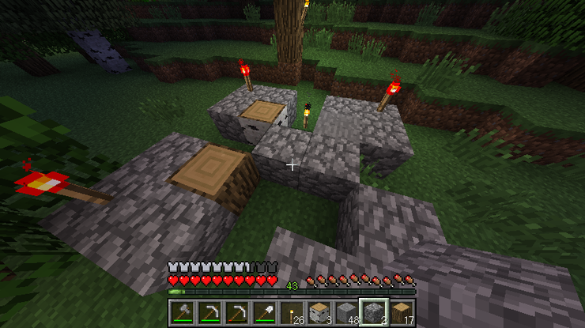
이런식으루여!
1번에 자작나무
3번에 자갈
5번에 조약돌
6번에 참나무
로 만든 패턴의 모습입니다!!
패턴까지 만들어주셨으면
(꼭 빈손으로!!) 가운데 조약돌 ▒을 마우스
오른쪽 클릭 해주시면
흑요석(Obsidian)과 이끼 낀 돌(Mossy Cobblestone)로 바뀌면서
워프 플레이트(도착지)가
완성됩니다!!
이제 가운데 돌을 우클릭해주면...!!!
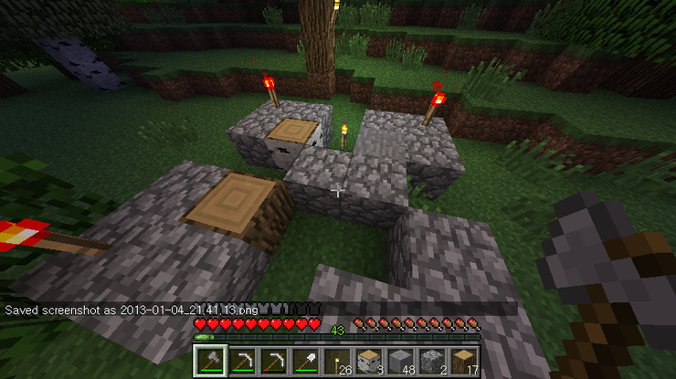
어라 바뀌지 않네여!!!!!
그 이유인즉슨
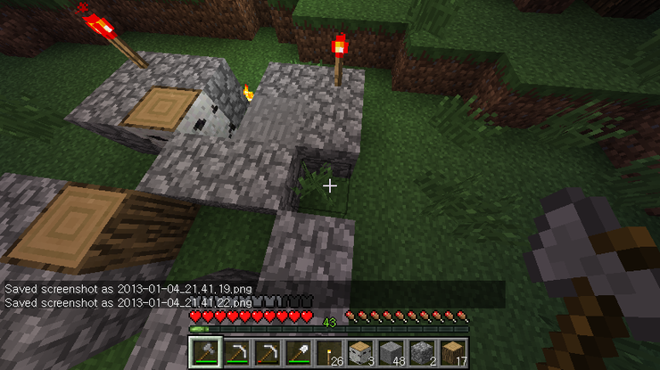
오른쪽에 풀이 자라잇어서 그래요!
채우는 곳 이외에는 전부 빈공간으로
만들어주셔야 합니다!!
저 풀을 툭 건드려 없애주고... 다시한번 우클릭하면!
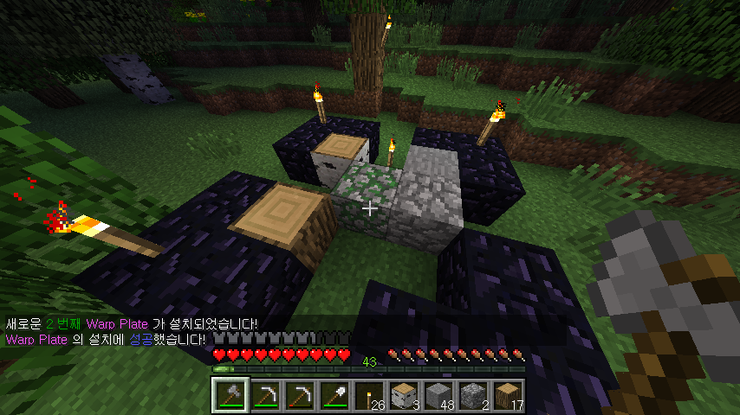
짜잔~!
메시지와 함께
가운데 조약돌은 이끼낀돌로
주변의 조약돌은 옵시디언으로
레드스톤 횃불은 일반 횃불로 바뀌면서
워프 플레이트 도착지가 완성되었습니다~!
이동할 출구를 만들었으니
이제 입구를 만들어야겠죠?
2. 출발지점
입구 부분은 굉장히 간단해여
마찬가지로 5x5의 공간이 3층만큼
비어있어야하구여
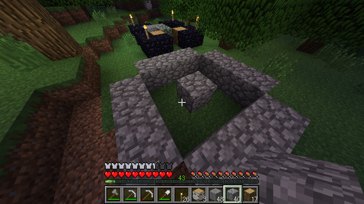
이렇게 조약돌로
이런 모양으로
1층을 만들어주시구
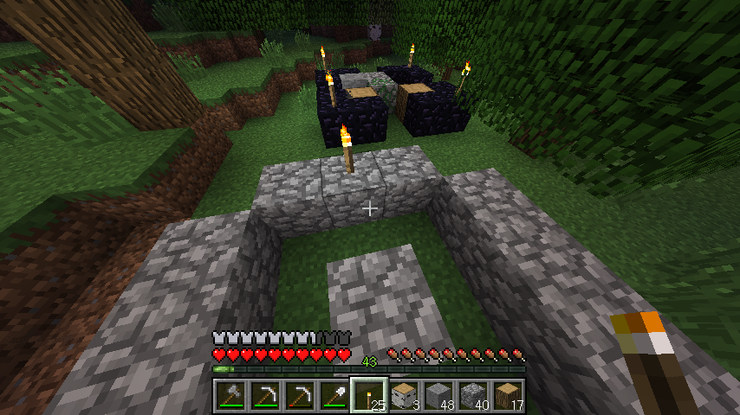
출구와 마찬가지로 횃불로 기준을 잡아주어야해여!
스샷을 잘 보면 아시겠지만
아까 만든 출구의
횃불은 스샷상으로 왼쪽에 있구여
지금 만든 입구의
횃불은 위쪽에 있어여
둘다 동서남북은 다르지만
횃불을 기준으로 패턴이 맞으면 상관없어여!
백문이 불여일견이니
우선 1번의
도착지점에서 사용했던 패턴을
그대로 만들어줄게여!
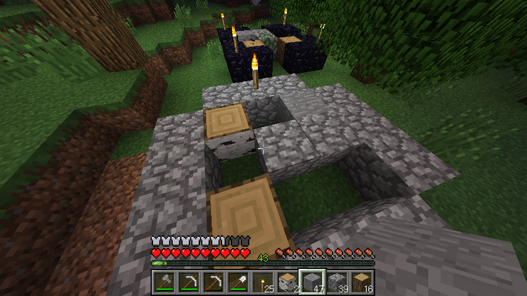
자
1번에 자작나무
3번에 자갈
6번에 조약돌
7번에 참나무
맞져?!
이제 가운데 돌을 우클릭해주면!
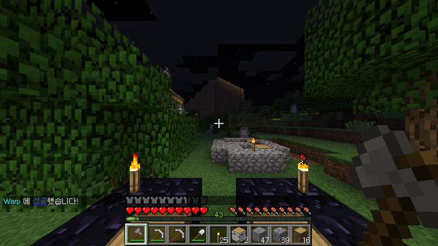
짜잔~!
메세지와 함께 텔레포트됩니다!!
이제 만든 워프 플레이트를 파.괘해볼게여!
원래대로 돌아갈거에여!
6번에 위치한
참나무를 부숴볼게여...
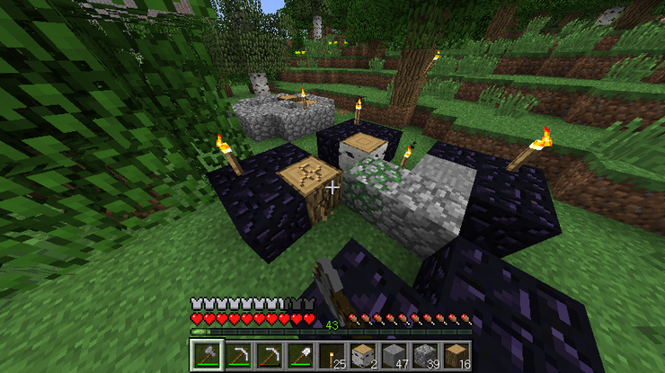
툭탁툭탁...
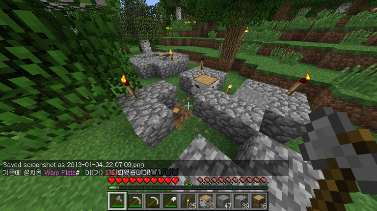
짠! 부서지면서 메시지와 함께
원래대로 돌아오는 걸 확인할 수 있습니당!
여기까지 Warp Plate 플러그인의 설명이었슴니다!
추가사항으로
등록이 되지 않은 워프 플레이트(도착지)인데
옵시디언이 남아있을 수도 잇어여!
망가진거져!
그럴땐 가운데 이끼 낀 돌을 다시 한번 우클릭해주세여!
처음으로 만들어본 플러그인이라
버그가 수도없이 많을 수 잇어여!!
디버깅을 위해서
어떤 버그가 생겼고
버그가 생겼을 때의 상황을 자세하게
꼭 댓글로 달아주세여!!
빠른 시일내에 수정할게여 ㅠㅠ
※ 수정 사항 v1.1
1. 서버의 plugin 폴더 안에 WarpSign 폴더 이름을 WarpPlate 로 수정
2. 망가진 Warp Plate 의 경우 우클릭하면 원래 재료로 복구
차후 제작 예정 목록
1. PowerTools
파워한 도구가 사용 가능!
도끼 : 나무 밑둥부터 맨 위까지 한꺼번에 채집
곡괭이 : 채집한 블럭 주변의 같은 블럭들도 함께 채집
삽 : 채집한 블럭 주변의 같은 블럭들도 함께 채집
2. ExitingRailRoad
씐나는 기차 레일 깔기!
일직선으로 레일 한번에 여러개 설치
3. DowsingRod
주변에 찾는 광물이 있으면 소리로 알려주는 다우징!
4. AutoFix
자동수리 플러그인!
특정 재료를 가지고 있으면 내구도가 다 닳을 때 자동 수리